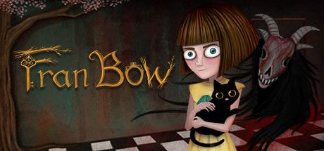
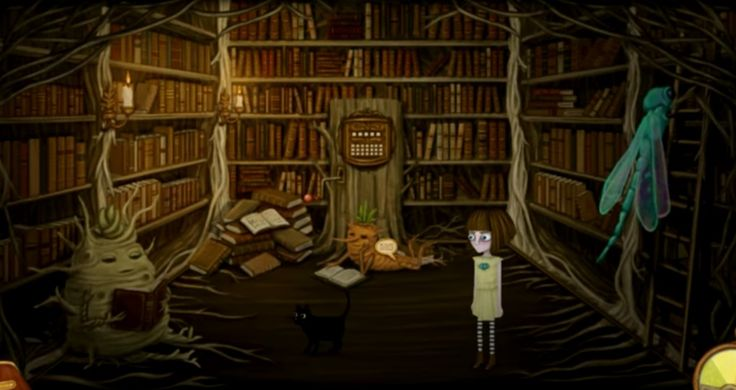
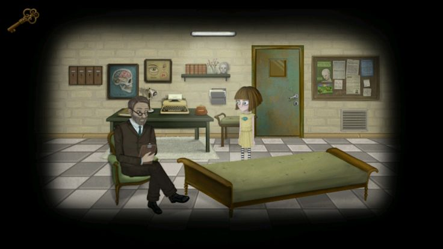

Bem-vindo ao Mundo de Fran Bow
Fran Bow é um jogo de aventura de terror psicológico que leva os jogadores a uma jornada sombria e surreal. Com um estilo visual único e uma narrativa envolvente, você seguirá Fran, uma jovem garota enfrentando horrores e mistérios enquanto busca por respostas.
A História
Fran Bow é uma jovem garota que, após testemunhar o assassinato brutal de seus pais, é internada em um hospital psiquiátrico. O jogo segue sua jornada enquanto ela tenta escapar da instituição e encontrar seu gato, Mr. Midnight, e sua tia, enquanto enfrenta alucinações perturbadoras e seres sinistros.
A trama se desenrola em um mundo repleto de criaturas bizarras e ambientes distorcidos, refletindo o estado mental instável de Fran. A história mistura elementos de contos de fadas sombrios com mistério psicológico, oferecendo uma experiência imersiva e angustiante.
Personagens Principais
Fran Bow
A protagonista do jogo. Fran é uma jovem garota com uma visão distorcida da realidade após a morte de seus pais. Sua busca por respostas e pelo seu gato a leva a enfrentar horrores inimagináveis.
Mr. Midnight
O gato de Fran, que também desempenha um papel crucial em sua jornada. Mr. Midnight é mais do que um simples animal de estimação; ele é um companheiro constante e uma fonte de conforto para Fran.
Dr. Oswald Harrison
O psiquiatra de Fran, que parece ter suas próprias intenções sinistras. Ele é uma figura ambígua e enigmática, cuja verdadeira natureza é revelada à medida que a história avança.
Gameplay
Fran Bow é um jogo de aventura point-and-click, onde você explora cenários sombrios e resolve quebra-cabeças para avançar na história. O jogo utiliza uma perspectiva em 2D com um estilo de arte que lembra um livro de contos de fadas perturbador.
Os jogadores interagem com o ambiente e os personagens para coletar itens e resolver enigmas. A narrativa é fortemente guiada por diálogos e eventos, proporcionando uma experiência de jogo imersiva e emocionante.
